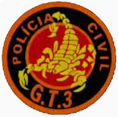
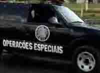
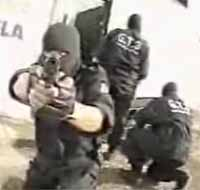

Todo trabalho de investigação bem feito chega num ponto em que é preciso um pouco de ação de campo para cumprir certos objetivos. E quando estes objetivos são em áreas de risco, é necessário uma equipe com treinamento diferenciado, voltado para a parte operacional. Todas as Polícias (Civil) brasileiras têm sua equipe tática, normalmente chamadas de Grupo de Elite.
O Grupo de Elite da Polícia fluminense todos aqui já conhecem, volta e meia a C.O.R.E é assunto em pauta no Caso de Polícia. Então hoje vamos divulgar o grupo de elite da Polícia de Goiás, o Grupo Tático 3, ou abreviado, G.T.3, da Polícia Civil de Goiás.
Depois de intercambio com policiais da Alemanha, a Polícia Civil de Goiás começou a formar um grupo tático, que acabou sendo oficialmente criado em 1999. Formado pelo antigo Grupo Anti-assalto à Banco (GAB) e o Grupo Anti Seqüestro (GAS), a equipe recebeu mais um grupo existente, o Grupo Tático. Assim, recebeu o nome de G.T.3, que significa Grupo Tático 3.A função precípua é prestar apoio técnico e operacional às unidades de Polícia tradicionais, que trabalham as investigações, notadamente em ações contra o crime organizado e quadrilhas de marginais de alta periculosidade, onde é necessário um maior contingente e material tático diferenciado.
Também atuam em situações com reféns, escolta de presos quando há probabilidade de tentativas de resgate, proteção à testemunhas, e em ações conjuntas com a Polícia Federal, PRF e a PM, quando necessário.
Em operações conjuntas o G.T.3 age sempre como equipe precursora e estabilizadora que vai tomar a edificação desejada e a partir daí proporcionar segurança e tranqüilidade aos Policiais Civis das equipes de investigação e busca. Não faz parte das atribuições do grupo a atuação em patrulhamento ou blitzens.Os treinamentos habituais vão desde a preparação física, a prática de tiros em situações extremas, invasão e tomada de ambientes, simulações de cativeiro ou de uso de reféns, enfim, toda a gama de preparação tática habitual nos grupos de elite em todo o mundo.
Os policiais civis de Goiás são continuamente observados durante sua vida profissional, e dependendo do perfil e de sua conduta, pode receber um convite para integrar o G.T.3 se desejar se candidatar, oportunidade em que será submetido à duros testes físicos e psicológicos, para depois completar um período de estágio até se tornar membro fixo do Grupo Tático 3.Confira um vídeo sobre o G.T.3 onde o Delegado Oswalmir Carrasco fala tudo sobre o grupo, com demonstrações e imagens da ação policial tática.
[youtube LIQ3j-Y5xI8]
Se não abrir acima, link para o vídeo operacional do G.T.3
Aproveitando, gostaria de convidar você leitor para auxiliar na busca por material como fotos e vídeos sobre os grupos táticos das Polícia Civil e Batalhões Especiais da Polícia Militar dos estados brasileiros, de maneira que possamos conhecer todos eles por aqui. Alguém se habilita?